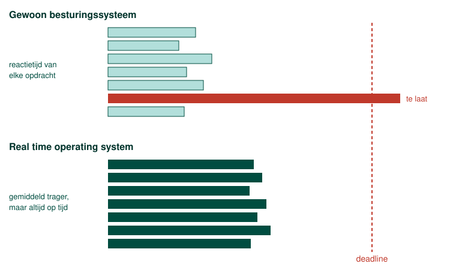

Niet elk proces is even dringend. Een berekening op de achtergrond mag gerust een halve seconde wachten. Een regelkring die om de milliseconde een nieuwe waarde naar een motor stuurt, mag dat niet. Het aansturen van een motor, lassen, verven of een CNC-machine is tijdskritisch: zo'n proces moet niet zozeer snel zijn als wel op tijd, want een stuurcommando dat te laat komt is even fout als een stuurcommando dat helemaal niet komt.
Daarom draagt elk proces een prioriteit, en dat is waar de process scheduler naar kijkt wanneer hij uit de ready queue kiest. Een proces met een hoge prioriteit komt voor een proces met een lage aan de beurt, en het mag een lopend proces met een lagere prioriteit zelfs onderbreken. In de Windows Task Manager kan je die prioriteit per proces zelf instellen, van Low tot Realtime.

Realtime is daar de hoogste klasse die er is: een proces in die klasse krijgt de processor vóór alles wat eronder staat. Een echte garantie krijg je daarmee niet. Windows belooft alleen dat zo'n proces als eerste aan de beurt komt, en niet dat het binnen een vaste tijd klaar is. Wie die garantie wel nodig heeft, gebruikt een real time operating system, dat kan waarborgen dat een taak binnen een zekere tijd afgehandeld is. Wat een prioriteitsklasse op een gewoon besturingssysteem wel doet, is de kans zo klein mogelijk maken dat het proces moet wachten.
Dat is meteen ook de reden waarom je een proces niet zomaar in die klasse zet. Een realtime proces dat de processor vaker opeist dan het nodig heeft, of dat door een fout in een lus blijft draaien, duwt alles wat eronder staat naar achteren: de muis reageert niet meer, het scherm ververst niet meer, en de invoer waarmee je de machine zou stoppen komt niet meer aan. Dat is de starvation van hiervoor, alleen kan je er nu niet meer omheen, want er is per definitie geen proces met een hogere prioriteit dat nog kan ingrijpen.
In het labo Embedded Systems maak je van een Raspberry Pi een PLC. De software die dat doet, CODESYS, heet daarom een soft PLC: dezelfde code die op een echte PLC draait, maar uitgevoerd door een gewone computer. Werkt zo'n Pi dan realtime? Hij doet dezelfde belofte als de klasse Realtime hierboven, en niet meer dan dat. De runtime van CODESYS is een gewoon proces op een gewoon Raspberry Pi OS, dat zichzelf een hoge prioriteit geeft: het komt als eerste aan de beurt, maar niets in dat besturingssysteem waarborgt binnen welke tijd een cyclus klaar is.
In het labo merk je daar niets van, en daar komt de misvatting vandaan: bijna altijd op tijd zijn is makkelijk, en het is iets anders dan altijd op tijd zijn. Een update die op de achtergrond de schijf bezighoudt, kan de cyclus een keer laten uitlopen. Om te leren programmeren maakt dat niets uit; voor een machine die een pers aanstuurt wel. Dat wil niet zeggen dat daar geen soft PLC kan staan. Van diezelfde software bestaat er voor de industriële pc uit hoofdstuk 4 een uitvoering die met een eigen realtime kern onder het besturingssysteem gaat zitten, en die geeft de garantie wel. Het verschil zit dus niet in de soft PLC zelf, maar in wat eronder draait.
Een proces realtime laten uitvoeren is dus geen manier om een programma sneller te maken. Het is een keuze die je maakt voor een taak die werkelijk tijdskritisch is, en pas nadat je weet dat die taak de processor ook weer loslaat.